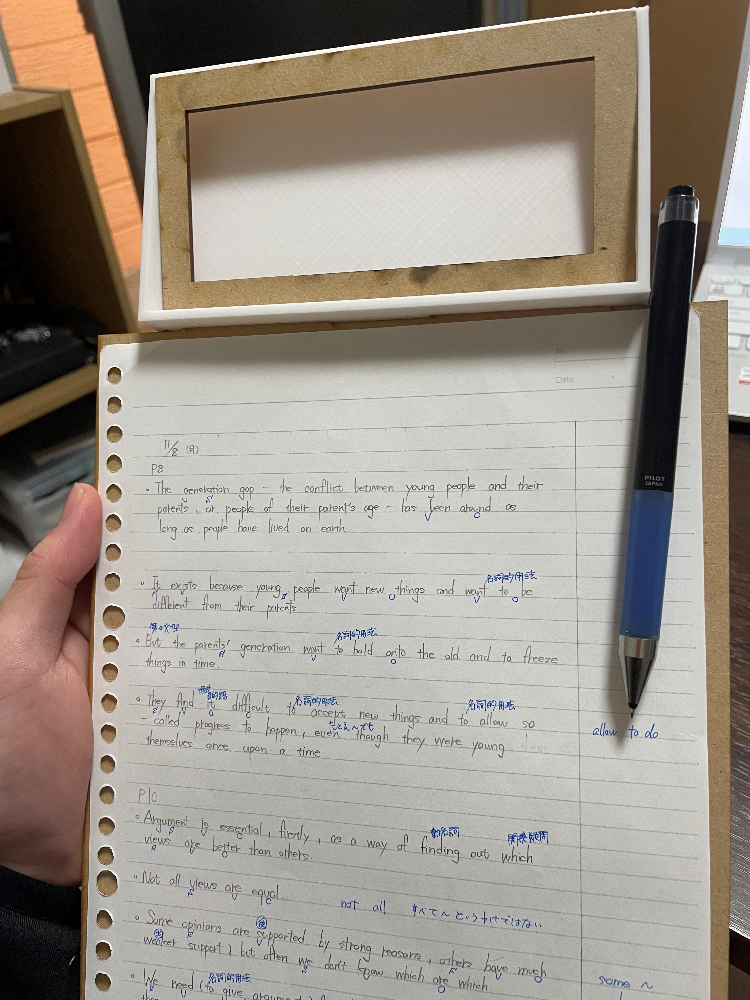

Design for others-2
①前回の課題ページ
②今回の課題で作成した物
(1)実際に作成した作品

(2)作品の説明
- 今回自分が作成した作品は、スマホケース付きのバインダーです。
- 前回作成したプロトタイプは一時的に使用する物であり、使用機会が限られていました。そのため、使用するとき以外は邪魔になってしまう可能性があった。
- 今回作製した作品は勉強中常に使用する物であり、手で支えなければならない物２つを組み合わせることによって手が空くことに加えて、バインダーという不安定な場所でも楽にノートをとれるような作品を作りました。
③使用機材
スマホケース部分・・・３Ｄ
バインダー部分・・・レーザーカット
④同じ班のDesign for others-2のリンク
デジタルファブリケーショントップページ
XBPトップページ